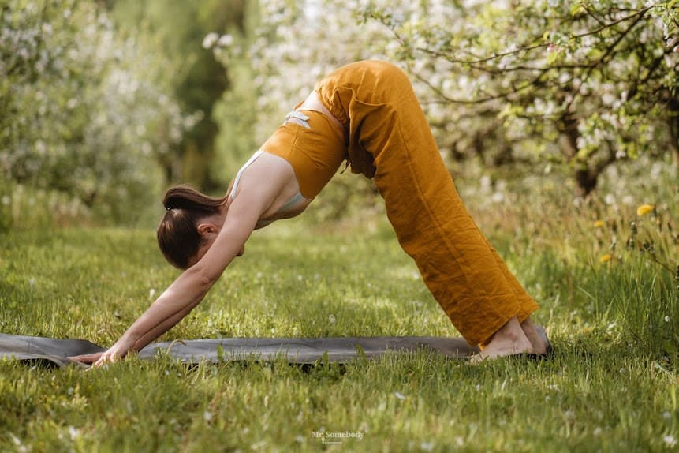

💪 Coaching individuel
Séances 1-to-1 personnalisées, à domicile ou en plein air. Un programme sur mesure adapté à vos objectifs, votre rythme et votre niveau.
Coach sportif & bien-être en Belgique. Un accompagnement personnalisé pour transformer durablement votre corps et votre esprit.
Réserver une séance découverte
Coach sportive & praticienne bien-être · Verviers, Belgique
Ancienne kinésithérapeute reconvertie au coaching après un burn-out à 32 ans, j'accompagne depuis 8 ans mes clients à reconstruire une relation saine et durable avec leur corps. Ma méthode mêle entraînement fonctionnel, respiration et nutrition consciente.
Le vrai progrès n'est pas dans la performance, mais dans la régularité.
Cinq accompagnements complémentaires pour avancer à votre rythme, vers votre équilibre.
Séances 1-to-1 personnalisées, à domicile ou en plein air. Un programme sur mesure adapté à vos objectifs, votre rythme et votre niveau.
Petits groupes de 4 à 8 personnes en extérieur. Fitness fonctionnel, yoga doux et stretching pour une énergie partagée.
Séance d'évaluation initiale (90 minutes) : posture, mobilité, habitudes de vie. Le point de départ idéal pour définir votre parcours.
Week-ends ressourçants en Ardenne : sport, nature, méditation et cuisine saine. Quatre stages par an, groupes de 10 personnes maximum.
Bilan alimentaire complet et suivi sur 3 mois. Une approche consciente et durable, sans régime restrictif ni interdits.
Trois formules pour s'adapter à votre rythme et à vos objectifs. Sans engagement.
49 € · séance unique
⭐ Le plus populaire
149 € / mois
249 € / mois
Ils ont retrouvé énergie et équilibre avec Pulse-Balance.
En 6 mois, j'ai retrouvé mon énergie et perdu 8 kg sans régime. Léa m'a appris à écouter mon corps, pas à le combattre.
— Sophie M., 38 ans, Liège
−8 kg · sommeil retrouvé
Cadre dans la finance, je carburais au café et aux anxiolytiques. Aujourd'hui, je gère mon stress par la respiration et le mouvement.
— Marc D., 45 ans, Verviers
Stress ÷ 2 · +30 % d'énergie
Après mon burn-out, je ne savais plus comment recommencer à bouger. Léa m'a accompagné en douceur, étape par étape. Je revis.
— Antoine L., 52 ans, Spa
6 mois de reconstruction
Après une blessure au genou, je pensais ne plus jamais courir. Le travail postural de Léa m'a permis de reprendre, plus fort qu'avant.
— Camille V., 29 ans, Namur
Reprise du sport en 4 mois, sans douleur